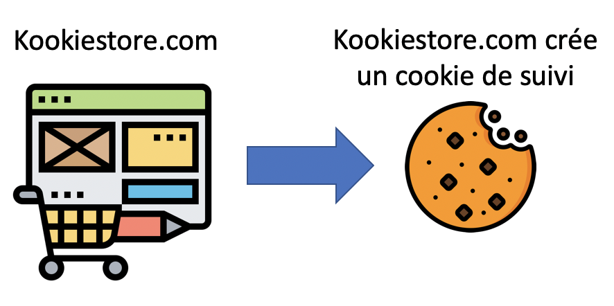

1.1 Identifiez les risques de sécurité pour une entreprise
Appréhendez l'importance de la sécurité
80 % des attaques sur les applications web sont dues à de mauvaises pratiques de développement, qui sont à l’origine des vulnérabilités découvertes et exploitées.
Le site have i been pwned? répertorie les différentes fuites de données liées à des sites web largement utilisés.
Dans ce cours, nous parlerons des atteintes à la protection des données qui découlent d'attaques courantes.
Ces violations sont spécifiquement liées aux applications web.
En resume
Les atteintes à la protection des données sur les applications web sont courantes et se produisent même dans les grandes entreprises.
Une attaque sur une application web peut faire perdre à une entreprise beaucoup d'argent et sa réputation.
Le risque est mesuré en comparant la valeur des données au coût de leur sécurisation.
1.2 Identifiez les règles de sécurité à appliquer par les entreprises
Découvrez les mesures de sécurité pour les applications web
Il existe trois principes de sécurité qui peuvent être appliqués pour garantir la sécurité d’une application ou d’une infrastructure.
La confidentialité. C'est l'assurance que les personnes non autorisées n'accèdent pas à des informations sensibles.
L'intégrité. Elle permet d'être sûr que les données sont fiables et n'ont pas été modifiées par des personnes non autorisées.
La disponibilité. C'est l’assurance qu'il n'y a pas de perturbation d'un service ou de l'accessibilité aux données.
La sécurité de l'information repose sur l'équilibre entre ces trois principes.
Ces principes fondamentaux sont des éléments clés dans l’élaboration des politiques de sécurité en entreprise.
Mais il existe également des réglementations imposées pour certains secteurs d’activités qui influencent également les politiques de sécurité des entreprises.
Il existe de nombreux règlements en fonction des domaines d’activité des entreprises, en voici quelques-uns qui pourront vous être utiles.
Identifiez les principales réglementations de sécurité pour les applications web
En 2018, le règlement général sur la protection des données (RGPD) est entré en vigueur.
Il modifie la manière dont les données personnelles sont stockées et utilisées et la façon dont les entreprises les traitent.
Il permet aux résidents de l'Union européenne de contrôler leurs informations personnelles, comme leur nom, leur âge, leur affiliation politique et leur orientation sexuelle, par exemple.
Les entreprises ne respectant pas le RGPD sont passibles d'une amende.
Bien qu'il soit basé sur la législation de l'Union européenne, il concerne tous les pays car les applications web sont disponibles dans le monde entier.
Les entreprises en dehors de l’UE qui font du business avec des entreprises européennes devront respecter le RGPD pour leurs applications web à destination du marché européen.
Un des éléments primordial et de veiller à garantir la sécurité des données personnelles stockées et échangées via l’application web.
Les données collectées doivent aussi répondre à un usage spécifique.
De plus, il est nécessaire d’avoir la possibilité de supprimer les données personnelles à la demande du client.
Par exemple, si un utilisateur veut se désabonner d'une newsletter, il faut s’assurer qu'il existe une option permettant le désabonnement.
Une fois qu’une personne se désabonne, l'adresse e-mail doit être automatiquement supprimée de la base de données.
Jetez un coup d'œil au site web officiel du RGPD (en anglais) pour avoir plus d'informations sur la façon dont vous pouvez développer votre application web selon les normes du règlement. CNIL RGPD
Découvrez la norme PCI DSS
La norme Payment Card Industry Data Security Standard (PCI DSS) est une norme établie pour toutes les entreprises qui traitent des données bancaires.
La sécurisation des données bancaires met l'accent sur la sécurité lors de la transmission, du traitement et du stockage des données.
De plus en plus de plateformes web et de solutions de stockage gèrent les applications pour les entreprises, il est essentiel que le fournisseur soit également conforme à la norme PCI DSS.
Si vous créez une application web qui traite des données bancaires, comme une boutique en ligne ou un site web par abonnement, vous devez chiffrer les transmissions pour garantir la sécurité des données en transit.
Les données bancaires transmises en texte clair constituent une violation de la norme PCI DSS, ce qui peut faire l’objet d’une amende.
Appréhendez la réglementation du traitement des données de santé
Les données de santé sont des données à caractère personnel particulières car considérées comme sensibles.
Elles font à ce titre l’objet d’une protection spécifique inscrite dans de nombreux textes comme le règlement européen sur la protection des données personnelles, la loi Informatique et Libertés, le Code de la santé publique, etc.,
afin de garantir le respect de la vie privée des personnes
Pour en savoir plus sur le traitement des données personnelles en France, rendez-vous sur le site de la CNIL.
Découvrez l'OWASP
L’Open Web Application Security Project (OWASP) est un organisme impartial, mondial et sans but lucratif.
Il évalue les dix principaux risques pour la sécurité des applications web et préconise un développement logiciel sécurisé.
L'OWASP organise des rencontres et des conférences ouvertes à tous à travers le monde.
Il est donc possible de rencontrer et d’échanger avec la communauté pour effectuer une veille constante.
En tant que développeur web, il est important d'apprendre comment sécuriser votre application, afin qu'elle ne soit pas vulnérable aux attaques courantes.
Le Top Ten de l'OWASP fournit des lignes directrices à suivre permettant de respecter des bonnes pratiques pour protéger une application web.
Cela vous permettra de prendre en compte la sécurité dès vos premiers développements et apportera également une crédibilité supplémentaire à vos clients ou à l’entreprise pour laquelle vous travaillez.
De plus, si vous avez besoin de développer votre application web selon les normes RGPD, PCI DSS ou autre, vous devrez d'abord la sécuriser avec l’OWASP !
En résumé
La confidentialité, l'intégrité et la disponibilité sont les principes de base de la sécurité de l'information.
Le RGPD garantit la confidentialité des données pour les résidents de l'UE.
PCI DSS assure la conformité de la sécurité des sites qui traitent les données bancaires.
Le traitements des données de santé est réglementé par la CNIL et nécessite une prise en charge particulière.
L’OWASP est une organisation à but non lucratif qui propose des référentiels sur les risques de sécurité des applications web.
Le Top Ten 2017 de l'OWASP est la dernière mise à jour sur les risques de sécurité des applications web aujourd'hui.
1.3 Découvrez l'Open Web Application Security Project (OWASP)
Découvrez le principe d'une attaque web
Les attaques web tirent parti des failles de sécurité de vos applications web.
On parle également de vulnérabilités.
Le Top Ten de l'OWASP est un document proposant une classification des attaques web les plus courantes ainsi que les contre-mesures associées.
Lors du développement d’applications, les développeurs ne sont pas forcément au fait des mesures de sécurité à appliquer, et la sécurité représente souvent une contrainte budgétaire et opérationnelle.
C'est pour cette raison qu'il est important de prendre en compte la sécurité dès les premiers développements.
En effet, une prise en compte tardive de la sécurité pourra représenter un coût supplémentaire, sans parler du risque encouru en cas d’attaque.
Découvrez l’OWASP
L'Open Web Application Security Project (OWASP) est une organisation à but non lucratif fondée en 2004 pour prévenir de manière proactive les attaques sur les applications web.
Il s'agit du premier effort de normalisation des pratiques de développement sécurisé.
En 2001, l'OWASP n'était pas une organisation officielle, mais plutôt un collectif qui préconisait des pratiques de développement sécurisé.
Ce collectif a pris de l'ampleur et est devenu l’OWASP foundation en 2004, avec une norme éthique pour maintenir une neutralité et l'absence de pressions commerciales.
L'OWASP n'est réglementée par aucune entreprise.
Elle propose un référentiel neutre permettant d’accompagner les entreprises dans le processus de sécurisation ou d’audit de sécurité.
Découvrez comment le Top Ten de l'OWASP est utilisé par les entreprises
Avec l'évolution d'Internet, les plus grandes entreprises ont une présence significative en ligne, ce qui les oblige à fournir et à maintenir des applications web.
La plupart des processus internes utilisent également des applications web.
Toute application qui traite des données sensibles peut être attaquée et nécessite donc une sécurité standardisée.
Les entreprises qui ne traitent pas de données sensibles, mais qui ont besoin d'une plateforme web pour leur business, sont également exposées aux attaques web.
Par exemple, une entreprise qui fournit des informations, comme un site d'actualité, peut ne pas avoir besoin des données personnelles de ses clients mais nécessite que le site web soit disponible pour permettre la continuité de service.
Si une attaque faisait s'effondrer le site, cela aurait une incidence sur les revenus de l'entreprise.
Le Top Ten de l'OWASP fournit une base de référence avec une liste de contrôles à effectuer pour atténuer les risques les plus courants en matière de sécurité.
Cette base de référence est également utilisée pour répondre à des normes réglementaires plus strictes, telles que le RGPD par exemple.
Pour plus d'informations, reportez-vous sur la page web de l’OWASP (en anglais).
Appréhendez l'OWASP Top Ten
Dans le Top Ten de l’OWASP, les attaques sont classées par ordre d’importance.
Les vulnérabilités présentes dans le Top Ten existent dans les applications web de tous les langages et frameworks.
Il n'existe pas de langage de programmation exempt de vulnérabilités.
Voici les 10 attaques les plus fréquentes contre les applications web, selon le Top Ten de l’OWASP en 2017.
Injection
Une attaque par injection est une attaque permettant l’injection de code arbitraire dans l’application.
Cela se produit lorsque des données non maîtrisées sont exécutées par le moteur présent sur le backend de l’application.
Les données de l’attaquant sont exécutées sans autorisations adéquates.
L’injection de code non autorisée peut permettre à un attaquant d’accéder à des données auxquelles il n’a normalement pas accès.
Piratage de session
Beaucoup d'applications exigent qu'un utilisateur se connecte pour arriver sur des pages auxquelles lui seul a accès.
L’application est vulnérable à une attaque si un utilisateur malveillant peut obtenir un accès non autorisé aux mots de passe, clés et jetons pour pirater la session d'un autre utilisateur.
Exposition de données sensibles
Les données stockées ou échangées via une application doivent être protégées pour éviter l’interception par une personne malveillante.
Les bases de données qui enregistrent les données personnelles, les données de cartes de crédit, les noms d'utilisateur et les mots de passe représentent une cible de choix pour un pirate.
Si ces données ne sont pas chiffrées, elles ne sont pas sécurisées et peuvent être récupérées lorsqu’elles sont en transit par exemple.
L'utilisation de techniques de chiffrement et de pratiques de sécurité peut atténuer ce type d’attaques.
Entités externes XML (XXE)
Le format XML permet de faciliter l’échange de données sous forme d'arborescence.
Il est largement utilisé sur Internet.
Il peut être exploité via l’injection XXE ou XML External Entity.
XML External Entity est une attaque contre les applications qui parsent des entrées XML (exemple flux RSS).
Cette attaque a lieu lorsque l'analyseur XML est mal configuré et contient une référence à une entité externe.
Contournement du contrôle d’accès.
Cette attaque vise les fonctionnalités des applications web qui nécessitent un contrôle d'accès.
Dans ce cas, les pirates peuvent utiliser l'URL pour contourner l'authentification, par exemple.
Ce type d’exploitation peut par exemple révéler comment une base de données est organisée.
Security Misconfiguration
Une mauvaise configuration de sécurité est le plus souvent observée dans les en-têtes HTTP qui permettent de donner des indications sur la configuration du serveur, ou via la gestion des exceptions par défaut.
Les codes d'erreur et les exceptions courantes peuvent donner à un attaquant un aperçu de l'application.
Cross-Site Scripting (XSS)
Les failles XSS se produisent chaque fois qu'une application inclut des données non fiables dans une nouvelle page web sans validation ou échappement.
Les failles XSS permettent aux attaquants d'exécuter des scripts dans le navigateur de la victime,
ce qui peut détourner des sessions utilisateur, altérer des sites web ou rediriger l'utilisateur vers un site malveillant.
Désérialisation non sécurisée (Insecure Deserialisation)
Une vulnérabilité de type “insecure deserialisation” permet à un utilisateur malveillant d'accéder et de modifier les fonctionnalités de l’application ciblée.
Utilisation de composants présentant des vulnérabilités connues
Même si votre application est sécurisée, vous devez vous assurer que le framework, les bibliothèques, les appels API et la plateforme que vous utilisez ne sont pas vulnérables.
Lorsqu'une nouvelle vulnérabilité est découverte, un correctif est généralement proposé.
Il faudra alors l’appliquer pour garantir la sécurité de l’application.
Manque de surveillance et de monitoring
Pour garantir la sécurité d’une application, il est nécessaire de surveiller et de monitorer les connexions.
De nombreux serveurs vulnérables servent de rebond aux attaquants.
La mise en place de monitoring permettra de détecter une anomalie sur le serveur.
Mais, est-il possible de sécuriser le code de toutes les attaques présentes dans le Top Ten de l'OWASP ?
Si vous utilisez les bonnes pratiques de sécurité et que vous êtes conscient des risques, vous avez une longueur d'avance !
Rappelez-vous que 80 % des applications présentent des vulnérabilités communes telles que décrites dans l'OWASP.
Apprendre à les connaître et utiliser des techniques simples de développement sécurisé dont nous parlerons dans ce cours vous aidera à créer un code de qualité !
En résumé
Comme vous avez pu le voir, il y a dix types d'attaques qui sont spécifiés dans OWASP :
l'injection ;
le piratage de session ;
l'exposition de données sensibles ;
les entités externes XML (XXE) ;
le contournement des contrôles d'accès ;
security misconfiguration ou mauvaise configuration de sécurité ;
Cross-Site Scripting (XSS) ou failles XSS ;
la désérialisation non sécurisée ;
l'utilisation de composants présentant des vulnérabilités connues ;
le manque de surveillance et de monitoring.
Assurez-vous de bien comprendre la différence entre ces dix types d'attaques et la façon dont elles peuvent être liées à votre application web.
Cette vulnérabilité permet à un attaquant d’injecter des données non maîtrisées qui seront exécutées par l’application et qui permettent d’effectuer des actions qui ne sont normalement pas autorisées.
Ces injections peuvent par exemple être des requêtes SQL pour manipuler la base de données, du code JavaScript ou HTML.
À quel endroit un attaquant effectue une injection ?
Dans une application web, il existe des champs ou des formulaires.
Ce sont des composants des applications permettant la saisie de l’utilisateur.
Ces champs sont généralement la cible d’injections.
Ils se présentent sous la forme d'un formulaire HTML ou d'un champ texte.
Ce que vous avez tapé est ensuite traité.
Si vous tapez un nom d'utilisateur et un mot de passe, ils seront alors envoyés à la base de données pour pouvoir vous authentifier.
Le type d'attaque par injection le plus connu est l'injection SQL.
Dans le cas d’une attaque par injection SQL, au lieu de mettre un nom d'utilisateur et un mot de passe sur une page de connexion, un utilisateur malveillant entrera des données directement interprétées par le moteur SQL, ce qui lui permettra de modifier le comportement de votre application.
Prenons un exemple de requête SQL :
SELECT * FROM accounts WHERE username='$username' AND password='$password'
SELECT
est un mot clé permettant de sélectionner un élément de la base de données.
Le caractère
*
indique que tous les éléments doivent être sélectionnés.
FROM
permet d’indiquer la table à utiliser. Dans notre cas, le nom de la table est ‘accounts’.
WHERE
spécifie ce que vous voulez sélectionner.
username='$username' AND password='$password'
sont les paramètres spécifiques recherchés par cette requête.
Cette requête peut être formalisée par : “Dans la liste des comptes, sélectionne le nom d'utilisateur et le mot de passe qui sont associés au données spécifiées.”
Par exemple, disons que quelqu'un a créé un compte avec le nom d'utilisateur :
‘John’
, et le mot de passe :
‘ThisIsMySUperS3cr3tPass’
.
La requête SQL sera la suivante :
SELECT * FROM accounts WHERE username='John' AND password='ThisIsMySUperS3cr3tPass'
Si l’utilisateur John et son mot de passe sont présents dans la base de données, l’utilisateur sera authentifié.
Cette requête classique peut être contournée par le biais d’une injection SQL.
L’exemple suivant nous montre un cas d’exploitation classique.
$username = 1' or '1' = '1’
$password = 1’ or ‘1’= ’1’
C'est ce qu'on appelle une instruction conditionnelle !
Elle nécessite que les requêtes respectent des conditions pour s’exécuter.
Dans ce champ,
“$username = 1”
et
“$password = 1”
sont comparés à l'instruction
'1=1'
.
Ici, peu importent le username et le password entrés : l’instruction sera toujours valide.
Si nous reprenons notre requête précédente, elle sera interprétée de la manière suivante :
SELECT * FROM accounts WHERE username=1' or ‘1’=’1' AND password=1' or ‘1’=’1''
Un utilisateur malveillant sera ainsi en mesure de s’authentifier avec n’importe quel compte de la base de données, en l'occurrence, ici, le premier compte de la table Account sera utilisé.
Sécurisez une application contre l’injection SQL
Pour garantir une protection contre l’injection SQL, il est possible d’utiliser un pare-feu d'application web ou WAF, pour Web Application Firewall en anglais.
Ce pare-feu se place entre l'utilisateur et l’application web et permet de vérifier et d'intercepter les données envoyées.
Toutefois il est également possible de sécuriser l’application directement dans le code.
Validez les entrées
La validation des entrées est une excellente pratique en tant que développeur web.
Elle limite ce que l'utilisateur peut mettre dans la zone de texte.
Avez-vous déjà été frustré lors de la création d'un compte parce qu'il n'était pas possible de créer un mot de passe sans chiffres ou lettres majuscules ?
C'est parce que la validation des entrées a été implémentée : l'entrée est analysée après avoir appuyé sur Entrée.
Cela n'empêchera pas l'injection, mais c'est une mesure que vous pouvez mettre en place pour limiter des attaques de base.
En effet, les caractères spéciaux spécifiques à certains langages ne pourront pas être utilisés.
Quels types de caractères peut-on limiter lors de la saisie utilisateur ?
Si vous avez dit le signe égal et l'apostrophe, vous êtes sur la bonne voie !
En effet, ces caractères sont interprétés par le moteur de base de données, ce qui veut dire que si un attaquant peut les rentrer dans un champ, ils pourront potentiellement altérer le fonctionnement ;
c’est le principe d’une injection SQL.
Paramétrez vos variables !
Vous pouvez écrire vos requêtes SQL en paramétrant les variables.
C'est ce qu'on appelle une requête préparée.
Examinons l'exemple précédent.
SELECT * FROM accounts WHERE username='$username' AND password='$password'
Pour l'instant, la requête connecte la variable
$username
directement à la base de données, la rendant vulnérable à l'injection.
Avec une requête préparée, le code ressemblerait à ceci :
SELECT * FROM accounts WHERE username='@username' AND password='@password'
Les variables Nom d'utilisateur et Mot de passe sont paramétrées,
elles seront donc désormais passées dans une méthode pour exécuter la requête au lieu de se connecter directement à la base de données.
Il existe de nombreuses façons de sécuriser les requêtes SQL,
mais comme la requête ne se connecte pas directement à la base de données,
il s'agit de l'une des meilleures pratiques pour sécuriser vos données contre l'injection SQL.
Les langages Java, .NET, ColdFusion, PHP et Ruby ont également des fonctions intégrées pour paramétrer vos variables.
Découvrez la différence entre requêtes SQL stockées ou dynamiques
Lorsque vous codez un champ d’entrée utilisateur sur votre application web, vous devez écrire une procédure SQL pour que la base de données sache quelles données extraire.
Il y a deux façons de le faire : stocké et dynamique. Une procédure stockée est un ensemble d'instructions SQL précompilées,
stockées dans une base de données et exécutées sur demande par le système de gestion de base de données qui manipule la base de données. Une procédure dynamique est une technique de programmation qui vous permet de construire des instructions SQL de manière dynamique lors de l'exécution.
Les requêtes ne seront pas stockées mais dynamiquement créées.
Pour sécuriser les requêtes SQL dynamiques, vous pouvez utiliser la fonction
sp_executesql
dans votre procédure SQL dynamique.
Voyons un exemple d’implémentation avec les variables paramétrées ci-dessous :
La requête SQL dynamique ci-dessus lie la variable ainsi que la fonction
sp_executesql
pour sécuriser le script.
Utilisez un Object Relational Mapper (ORM)
De nombreux langages disposent d'outils ORM (Object Relational Mapper) qui peuvent obfusquer votre requête, c’est-à-dire masquer son fonctionnement.
Les modules ORM tels que
pg
et
knex
peuvent être utilisés avec des frameworks JavaScript.
Regardons la requête SQL suivante :
SELECT * FROM accounts WHERE username='@username' AND password='@password'
Tout d'abord, notez que
@username
et
@password
sont paramétrés !
Voici un exemple de la façon dont une requête correcte sera exécutée dans votre application web à l'aide de knex Node.js.
Dans le code ci-dessous, knex obfusque la requête.
Cela signifie qu'il masque ce à quoi ressemble vraiment la requête SQL, ce qui permet d’ajouter une couche de sécurité supplémentaire.
Les injections peuvent inclure (mais sans s'y limiter) des commandes SQL, JavaScript, HTML ou OS.
Elles permettent de manipuler les entrées pour effectuer des actions et accéder à des données normalement non autorisées.
Vous pouvez prévenir les attaques par injection en sécurisant votre code avec la validation des entrées, les variables paramétrées, les ORM et les procédures SQL stockées.
Les procédures SQL dynamiques peuvent être dangereuses, donc assurez-vous d'utiliser la fonction executesql() dans la base de données pour les sécuriser.
L’authentification est une fonctionnalité cruciale dans votre application web pour permettre à vos utilisateurs d’accéder à leur données et à leur environnement.
Dans ce chapitre, nous allons voir comment sécuriser l’authentification.
Définissez le piratage de session
Le piratage de session (ou Broken Authentication) est l’attaque qui occupe la deuxième place du classement de l’OWASP depuis 2013.
Considérant qu'elle occupait la troisième place en 2010, l'OWASP démontre que l’exploitation de l’authentification est une faille courante.
Supposons que vous ayez un site qui exige que vous vous connectiez avec votre nom d'utilisateur et votre mot de passe pour accéder aux pages qui contiennent des informations sur votre compte.
Lorsque vous vous connectez, les informations d'identification sont transmises à la base de données.
Si le nom d'utilisateur et le mot de passe correspondent à ceux de la base de données, vous serez authentifiés pour une session.
Une session est une période de temps spécifiée pendant laquelle un utilisateur authentifié aura accès à des pages et à des activités spécifiques de l'application.
À tout moment du processus d'authentification, un utilisateur malveillant peut obtenir un accès non autorisé à la session et avoir accès à des données sensibles.
Une session peut inclure des données personnelles, des données financières et l'accès à des informations protégées ou à des secrets commerciaux, par exemple.
Le piratage de l’authentification peut être automatisé avec l’utilisation de la technique de force brute, c’est-à-dire l’utilisation d’une multitude de couples identifiant/mot de passe de manière automatique, jusqu’à obtenir le bon.
Lorsqu'un utilisateur malveillant a un accès non autorisé à une liste de noms d'utilisateur et de mots de passe, une attaque appelée credential stuffing peut être utilisée pour essayer toutes les combinaisons de noms d'utilisateur et de mots de passe, jusqu'à ce que le pirate s'authentifie.
Le credential stuffing est un type d’attaque où des informations de comptes volées,
généralement des listes d'identifiants et des mots de passe associés,
sont utilisés pour obtenir un accès non autorisé à des comptes utilisateurs par le biais de demandes de connexion automatisée adressées à des applications web.
Appréhendez l'utilisation de cookies
Un cookie HTTP (également appelé cookie web, cookie Internet, cookie de navigateur ou simplement cookie) est une petite donnée envoyée depuis un site web et stockée sur l'ordinateur de l'utilisateur par un navigateur web lorsque l'utilisateur navigue.
Les cookies ont été conçus pour constituer un mécanisme fiable permettant aux sites web de mémoriser des informations importantes (telles que les éléments ajoutés au panier dans une boutique en ligne) ou d'enregistrer l'activité de navigation de l'utilisateur (en se connectant ou en enregistrant les pages consultées).
Ils peuvent également être utilisés pour mémoriser des informations arbitraires que l'utilisateur a précédemment entrées dans des champs de formulaire, telles que des noms, des adresses, des mots de passe et des numéros de carte de crédit.
Voilà pourquoi il représente un intérêt pour un attaquant.
Que se passe-t-il lorsqu'un site demande d'accepter des cookies ?
Vous vous souvenez peut-être que votre navigateur vous a averti qu'un site web nécessite l'utilisation de cookies pour que vous puissiez l'utiliser ?
HTTP ne peut pas enregistrer d'informations sur votre navigateur.
Un cookie est donc un fichier tiers enregistré qui donne un accès personnalisé à l'utilisateur du site.
Les cookies ont été créés pour vous faciliter la vie, de sorte à ce que vous n’ayez pas besoin de vous reconnecter ou d'entrer les mêmes données encore et encore.
Ils aident un site web à se souvenir de ce que vous avez fait sur leur site pour personnaliser l'expérience.
Ces cookies ne sont accessibles que par le site web qui les a créés.
Il existe deux types de cookies : les cookies de suivi et les cookies de session.
Découvrez les cookies de suivi
Les cookies de suivi sont un type de cookie spécifique distribué, partagé et lu sur au moins deux sites web non liés,
dans le but de collecter des informations ou éventuellement de vous présenter des données personnalisées.
Supposons que j'achète des biscuits sur un site web appelé koookiestore.com, et qu'il télécharge un cookie sur mon navigateur avec des informations qui m'identifient.
Toutes mes activités sur ce site seront enregistrées sur koookiestore.com via le cookie qui contient mon identifiant.

Cookie de suivi
Puis, je décide d'aller sur le site funnikaaaats.com, et soudain je vois toutes ces annonces me montrant les biscuits que je regardais sur koookiestore.com !
Mais seul koookiestore.com peut accéder aux informations des cookies stockées sur son site, alors comment funnikaaaats.com a découvert que j'aime ces cookies ?
funnikaaaats.com a intégré un code pour koookiestore.com à l'intérieur de son site web afin qu'il puisse accéder à votre cookie koookistore.com.
Et maintenant, ces informations sont stockées sous ce cookie ID dans koookiestore.com.
Maintenant, le cookie de suivi de koookiestore.com sait quels cookies et vidéos de chat vous aimez.
Bien que les cookies de suivi ne peuvent pas être utilisés pour pirater une session, ils peuvent représenter un problème concernant la confidentialité et la vie privée, car ils permettent l’accès à vos habitudes de navigation.
Découvrez les cookies de session
Les cookies de session contiennent un identifiant qui identifie une session.
Supposons que vous vous connectez au site web de votre banque et que vous recevez un cookie qui est stocké dans votre navigateur et qui vous garde connecté jusqu'à ce que la session expire.
Dans ce cas, chaque session reçoit un ID de session.
L'authentification peut être détournée si l'utilisateur malveillant devine le bon ID de session.
Avec le protocole HTTP, les sites web n'ont pas la possibilité d'enregistrer des informations d'authentification ou de session sauf s'ils les stockent dans un fichier sur les navigateurs.
C'est à ça que servent les cookies de session.
Souvent, le navigateur enregistre un cookie qui contient les informations de session, l'ID de session, la date et l'heure d'expiration.
Des token peuvent être utilisés pour l'authentification avec le Single Sign-On (SSO).
Un utilisateur reçoit un ticket ou un jeton après authentification, afin de se connecter à une session.
Le pirate peut accéder au jeton et le réutiliser pour s’authentifier sans avoir besoin d'un nom d'utilisateur ou d'un mot de passe.
Protégez vos cookies !
Voici quelques recommandations pour garantir la sécurité des cookies :
assurez-vous que les cookies sont chiffrés lors de la transmission via HTTPS ;
ne stockez pas d'informations d'identification en texte clair dans vos cookies ;
définissez une date d'expiration pour vos cookies-session.
Prévenez votre application des authentifications non autorisées
Des recommandations simples peuvent être appliquées :
exigez de vos utilisateurs qu'ils aient un mot de passe fort, c'est-à-dire contenant des majuscules, des minuscules, des chiffres et des caractères spéciaux.
Il sera ainsi plus difficile pour un utilisateur malveillant de trouver le mot de passe ;
il est également recommandé d'exiger des utilisateurs qu'ils changent régulièrement leur mot de passe en cas d’attaque de credential stuffing ;
mettez en place le verrouillage de compte lorsqu'un utilisateur essaie de se connecter un trop grand nombre de fois sans y parvenir.
Cela permet d'empêcher les attaques de force brute ;
changez ou désactivez les comptes par défaut ;
implémentez une authentification forte, c’est-à-dire avec plusieurs facteurs d’authentification, comme la validation par SMS ou par mail, par exemple.
Heureusement, il existe des frameworks pour vous aider à implémenter plus facilement un code sécurisé, quel que soit le langage que vous utilisez :
ASP.NET Core IdentityFramework peut être intégré dans votre application web pour personnaliser vos besoins d'authentification.
L'ajout d'ASP.NET Core IdentityServer vous permet d'utiliser les techniques de développement sécurisé pour l'authentification par jeton.
Ruby a des fonctions (gems) comme omniauth qui peuvent être implémentées pour l'authentification.
Java a javax.security.auth, et l'API Java Authentication and Authorization Service (JAAS), qui peuvent configurer votre authentification de la bonne façon !
PHP a PHPSec peuvent être utilisés pour gérer la sécurité et les sessions.
Prévenez l'authentification malveillante
Voici un exemple d'entrée avant qu'elle ne soit transmise à la base de données.
//Remove all characters from the email except letters, digits and !#$%&'*+-=?^_`{|}~@.[]
echo filter_var($dirtyAddress, FILTER_SANITIZE_EMAIL);
Une bonne pratique pour la validation des entrées est de vérifier toutes les entrées en supprimant les caractères non pertinents.
En Java, vous pouvez créer une méthode pour hacher le mot de passe avec le framework Spring.
Le hachage permet de générer une empreinte unique pour une entrée.
Le problème est qu’il est possible d’utiliser des rainbow tables, c’est-à-dire des listes de hash préalablement calculés, puis de les utiliser avec une attaque de force brute.
Pour éviter ce genre d’attaque, il est possible d’ajouter un sel permettant d’ajouter une donnée supplémentaire, et ainsi renforcer la sécurité.
Mais comment faire, concrètement ?
Tout d'abord, vous allez créer un objet pour l'algorithme de chiffrement, et le saler.
Le salage est une méthode permettant de renforcer la sécurité des informations qui sont destinées à être hachées (par exemple des mots de passe) en y ajoutant une donnée supplémentaire afin d’empêcher que deux informations identiques conduisent à la même empreinte (au même hash).
Le but du salage est de lutter contre les attaques par analyse fréquentielle (permettant l’analyse des fréquences des caractères employés), les attaques utilisant des rainbow tables, les attaques par dictionnaire et les attaques par force brute.
Un sel est une séquence aléatoire utilisée en plus du chiffrement pour rendre le hachage imprévisible.
Quel que soit le langage dans lequel vous développez, il existe plusieurs solutions qui peuvent vous permettre de sécuriser votre mécanisme d'authentification !
Adopter les meilleures pratiques pour la gestion des sessions et des jetons est également important car il s'agit d'une autre forme d'authentification.
Les cookies de session et les jetons peuvent rendre vos sessions vulnérables.
Voici quelques conseils pour vous aider à développer vos mécanismes d'identification et de validation de session :
ne mettez pas l’ID de session dans l’URL ;
limitez la durée de l'ID de session ;
modifiez le nom d'ID de session par défaut
PHP possède une bibliothèque appelée SessionManager avec des fonctions qui peuvent être utilisées pour valider les sessions avec des restrictions.
Voici un exemple de la fonction
preventHijacking()
du gestionnaire de sessions utilisé pour limiter une session à un hôte et à une adresse IP spécifiques.
Si l'hôte et l'adresse IP ne sont pas identiques, ils ne s'authentifieront pas.
Cela permet de sécuriser le mécanisme d'authentification.
Si j'implémente toutes ces règles, mon application web sera-t-elle sécurisée ?
Peu importe le nombre de couches de sécurité et de fonctionnalités que vous ajoutez à votre code, il y a toujours des attaques auxquelles vous ne serez pas préparé.
Restez informé des nouvelles vulnérabilités afin de sécuriser votre application contre de futures attaques.
Votre application n'est jamais sûre à 100% car le risque zéro n’existe pas !
Cependant, en respectant ces règles, vous pouvez prévenir les attaques courantes et réduire votre surface d'attaque de 80 %.
En résumé
Le piratage d’authentification peut se produire lorsque les cookies ne sont pas sécurisés.
Utilisez la validation des entrées et limitez le nombre d'essais de connexion.
Les attaques par force brute et credentials stuffing sont courantes.
Protégez les identifiants de session au moyen d’algorithme de chiffrement.
L'exposition des données sensibles est la troisième vulnérabilité dans le top 10 de l’OWASP. Les données stockées et transmises dans l’application doivent respecter les bonnes pratiques de sécurité.
Dans ce chapitre, nous aborderons la sécurisation des données échangées.
Découvrez comment les données transitent la couche de transport
Lorsque vous surfez sur Internet, votre navigateur utilise le les protocole HTTP (Hypertext Transfer Protocol) pour afficher les pages web,
et le protocole Transmission Control Protocol/Internet Protocol (TCP/IP) pour les transmettre.
Imaginons que vous tapez une URL dans votre barre de navigateur et que vous cliquez sur
Entrée
Votre navigateur va lancer une connexion TCP, qui va envoyer des requêtes GET et POST pour vous connecter au serveur web associé au nom de domaine ou à l'adresse IP.
Si le serveur web établit la connexion TCP avec le navigateur, une réponse avec le code status et le fichier demandé (généralement le fichier index.html pour la page web) sera transmise.
Mais dans notre cas, les données transitent en HTTP et pas en HTTPS...
Ceci nous amène à la première vulnérabilité.
Les données transitant en HTTP peuvent être interceptées, car elles transitent en clair.
Comment un utilisateur malveillant peut avoir accès à cette connexion TCP ?
Comprenez l’attaque de l’homme du milieu (MITM)
Prenons un exemple.
Vous avez décidé d'aller dans votre endroit préféré pour boire un café et vous utilisez le Wi-Fi gratuit pour surfer sur certains sites.
À votre insu, un pirate a décidé d'utiliser un sniffer réseau, qui enregistre les transmissions TCP directement sur son ordinateur.
Vous surfez et vous vous connectez à un site en HTTP pour envoyer des articles de blog.
Le pirate sera en mesure d'accéder à vos informations d'identification et au contenu de votre blog, car celui-ci n'était pas chiffré !
Votre session a été détournée et l'attaquant peut ainsi voler vos données.
L'attaque de l'homme du milieu (Man in the Middle, en anglais) est l'une des principales causes de détournement de session.
L'attaquant se place au milieu de votre communication, intercepte les connexions réseau et capte ainsi tout ce que vous envoyez.
Le vol de données et le détournement de session ne sont que quelques exemples de ce qu'un attaquant peut faire une fois sur le réseau.
D'une façon ou d'une autre, si les données sont envoyées en HTTP et sont en clair, il suffit de peu d'efforts pour interpréter les données.
Utilisez HTTPS
HTTPS est la variante sécurisée de HTML qui utilise les protocoles Secure Sockets Layer/ Transport Layer Security (SSL/TLS) pour chiffrer les transmissions.
Cela permet d'ajouter une couche de sécurité lorsque les données sont en transit.
En règle générale, si vous devez vous authentifier avec un mot de passe n'importe où sur le site, utilisez HTTPS pour protéger le mot de passe lorsqu'il est transmis sur le réseau.
Je vous conseille de configurer l'ensemble de votre application web avec HTTPS, qu'elle traite ou non des informations sensibles.
En effet, Google marquera tous les sites HTTP comme non sécurisés pour conduire plus de sites à utiliser HTTPS.
Avoir un site configuré avec HTTPS augmentera la confiance de vos utilisateurs.
Comment utiliser le protocole TLS pour sécuriser une application ?
Tout d'abord, obtenez un certificat SSL et ajoutez-le à votre serveur.
Ce certificat est nécessaire pour chiffrer les données en cours de transmission.
Ensuite, codez vos pages avec HTTPS !
Si vous voulez en savoir plus sur le processus d'obtention d'un certificat SSL pour votre application web,
vous pouvez utiliser OpenSSL (en anglais) ou consulter ce tutoriel (en anglais).
Mettez en place le HTTPS
Pour créer un serveur web pour votre application web, Node.js est une plateforme populaire.
Cependant, il utilise HTTP par défaut pour la transmission de données.
Pour utiliser HTTPS, Il suffit de spécifier l'utilisation du module HTTPS sur Node.js.
Pour démarrer un serveur HTTP sur Node.js, le code est le suivant :
var http = require('http');
http.createServer(function (req, res) {
}).listen(8080);
Il vous suffit d'ajouter un S et vous pouvez maintenant démarrer un serveur HTTPS tout aussi facilement (avec un certificat SSL, bien sûr).
var https = require('https');
https.createServer(function (req, res) {
}).listen(8080);
ASP.NET a un module appelé SecureWebPageModule, qui peut être ajouté au web.config avec l'ajout suivant :
< secureWebPages enabled="true">
.
[RequireHttps]
peut également être utilisé dans le fichier
AccountController.cs
.
Enfin, ASP. NET prend en charge la réécriture d'URL.
Avec Ruby on Rails, vous pouvez exécuter un serveur web NGINX en utilisant HTTPS, et créer votre certificat :
sur le fichier production.rb, changez la valeur
config.force_ssl = true
;
sur application.rb, écrivez la ligne
config.force_ssl = (ENV[ENABLE_HTTPS"] == "yes")
;
utilisez Rack pour forcer SSL en intégrant la gem rack-ssl.
Quel que soit le langage que vous utilisez, assurez-vous que votre page de connexion et toutes les pages web qui font partie de la session utilisent HTTPS.
Sécurisez les requêtes GET et POST
Lorsque vous mettez en place des connexions TCP dans vos requêtes, quelques règles de sécurité peuvent être mises en place.
Lorsque la connexion TCP est établie entre le navigateur et le serveur web, les informations envoyées sont divisées en trois parties.
Tout d'abord, il y aura une requête GET ou POST avec une URL spécifique.
Ensuite, il y a un en-tête (header) et le corps de la requête (body).
Une requête GET ressemble à ceci :
GET /index.html HTTP:1.1
Header:
Body:
Ses paramètres sont présents dans l'URL, et sont mis en cache dans le navigateur.
Il est préférable d'utiliser une requête GET lorsque vous récupérez des informations.
Cela signifie que vous pouvez interroger la base de données, mais sans modification.
Une requête POST ressemble à ceci :
POST https://securesite.com/resetpassword.php
Header:
Body: password=password123 (encrypted)
Les requêtes POST sont utilisées pour apporter des modifications à la base de données et doivent donc être transmises avec un chiffrement par TLS.
Ces requêtes ne permettent pas de sauvegarder les données en cache dans le navigateur,
rendant ainsi les paramètres contenus dans le corps de la requête facilement piratables.
Comment être sûr que mes requêtes GET et POST ne sont pas exposées à des vulnérabilités ?
Vous pouvez coder jusqu'à obtenir quelque chose de parfait, mais il est également possible d'utiliser des modules externes comme Ajax, Axios ou jQuery.
Ces modules externes vous permettront de vous assurer que vous utilisez HTTPS pour toutes vos requêtes GET et POST.
Tirez parti de la sécurité par défaut de votre navigateur
Parlons maintenant de Cross-Origin Resource Sharing (CORS).
Votre navigateur fournit une sécurité à vos requêtes GET et POST par défaut.
Lorsqu'une demande est faite, elle ne sera autorisée que si elle a la même origine.
Cela signifie qu'elle doit avoir les mêmes nom de domaine, port, hôtes et schémas.
Cette restriction n'est pas toujours utile si les requêtes nécessitent une transmission vers un autre port ou domaine.
Lorsque cela se produit, l'application web est exposée à une attaque CSRF.
Le cross-site request forgery (CSRF) est un type de vulnérabilité des services d'authentification web.
L’objet de cette attaque est de transmettre à un utilisateur authentifié une requête HTTP falsifiée qui pointe sur une action interne au site,
afin qu'il l'exécute sans en avoir conscience et en utilisant ses propres droits.
Comment résoudre ce problème ?
CORS peut être implémenté pour éviter les attaques CSRF, en ajoutant des politiques pour limiter l'accès à une origine spécifique ou un type de requête HTTP, par exemple.
Erreurs de CORS - Node.js
CORS signifie « Cross Origin Resource Sharing ».
Il s'agit d'un système de sécurité qui, par défaut, bloque les appels HTTP d'être effectués entre des serveurs différents, ce qui empêche donc les requêtes malveillantes d'accéder à des ressources sensibles.
Dans notre cas, nous avons deux origines : localhost:3000 et localhost:4200 , et nous souhaiterions qu'elles puissent communiquer entre elles.
Pour cela, nous devons ajouter des headers à notre objet response .
Dans le fichier app.js , ajoutez le middleware suivant avant la route d'API :
2.4 Protégez les données stockées sur une application
Dans le chapitre précédent, nous avons parlé de la sécurisation des données lors de leur transmission.
Mais où sont stockées les données et comment les protéger ?
Lorsque vous visitez un site web et que vous entrez des données dans un formulaire, comme un nom d’utilisateur et un mot de passe,
ces données sont ensuite envoyées et une requête sur la base de données est effectuée, pour vérifier que l’utilisateur existe et que le mot de passe entré est le bon.
S’ils correspondent, le serveur vous donne accès à vos données stockées sur la base de données.
Les données stockées sont donc le contenu de la base de données.
Typiquement, une base de données contiendra des données sensibles sur un site qui nécessite une authentification.
Nous savons comment effectuer des requêtes dans la base de données afin de prévenir les modifications non autorisées et l'exposition de la base de données.
Mais si un attaquant arrive à contourner l’authentification, comment pouvons-nous restreindre son accès aux données ?
Pour cela, il existe un moyen sûr, le chiffrement des données.
Découvrez les algorithmes de hachage
Pour protéger certaines données stockées sur une application, il est possible d’utiliser des algorithmes de hachage.
L'intérêt des algorithmes de hachage est qu’ils permettent de calculer une empreinte (ou hash) d’une chaîne de caractères, par exemple.
Cette empreinte est utile pour éviter de stocker en clair le mot de passe dans la base de données.
Prenons un exemple.
Nous avons une chaîne de caractères
password123
.
Nous allons utiliser un algorithme de hachage pour obtenir une empreinte.
Dans notre exemple, nous allons utiliser les algorithmes de hachage SHA1 et MD5.
Nous obtenons l'empreinte suivante :
SHA-1 (Secure Hash Algorithm) et MD5 (message-digest algorithm) sont des fonctions de hachage cryptographique.
La chaîne de caractères
password123
est désormais stockée sous la forme d'un hash MD5, rendant sa lecture impossible pour un utilisateur malveillant.
Cependant, certains attaquants réussiront tout de même à contourner ce mécanisme.
Comme pour les cookies, il est possible d’effectuer une attaque par rainbow table,
c’est-à-dire qu’un attaquant va préalablement calculer des hash de mots de passe puis les utiliser avec une attaque de brute force pour trouver le bon.
Comme pour l'authentification, il est possible de contourner cette attaque en utilisant le salage.
Sachez qu'il existe de nombreux algorithmes de hachage : Bcrypt, Scrypt, SHA, MD5, Argon2 et PBKDF2, par exemple.
Contrairement aux algorithmes SHA et MD5, Argon2, PBKDF2, Bcrypt et Scrypt sont plus axés sur la sécurité que sur l'efficacité.
Cela signifie que le cassage de ces algorithmes exige plus de ressources.
Argon2 est un des algorithmes de hachage les plus puissants et fortement recommandés par l'OWASP.
Argon2
Sécurisez une base de données
Gérez l'authentification
Pour sécuriser l’authentification, il existe de bonnes pratiques de sécurité simples à appliquer :
supprimer les comptes par défaut en changeant les mots de passe connus ;
utiliser le principe de moindre privilège pour vous assurer qu'un ou deux comptes seulement ont des privilèges élevés.
Le principe de moindre privilège est un autre concept fondamental de la sécurité des systèmes d’information.
Avec le moins de privilèges possible, vous vous assurez que tous les membres de l'organisation n'ont que les droits dont ils ont besoin sur le réseau pour exercer leur fonction spécifique définie, ni plus ni moins.
Cachez des données sensibles dans une base de données
Il existe plusieurs techniques qui permettent de cacher les données sensibles d’une base de données et donc de sécuriser une application.
L'anonymisation
est une technique recommandée par l’OWASP pour cacher des données privées en chiffrant, brouillant et supprimant des parties des données.
Par exemple, si une demande est faite pour la date de naissance d'une personne pour s’authentifier, seule l'année sera fournie par la base de données.
La pseudonymisation
est une technique recommandée par le RGPD.
Elle remplace les données personnelles par des identifiants et des pseudonymes artificiels pour cacher les données sensibles.
La minimisation des données
permet de se conformer à l'ensemble de règles du RGPD.
L'entreprise doit uniquement demander, enregistrer et traiter les données personnelles requises.
En d'autres termes, toute donnée personnelle demandée doit avoir un motif commercial solide.
Il existe deux façons d'appliquer ces techniques à votre base de données.
Le masquage dynamique des données
permet de se conformer à l'ensemble de règles du RGPD.
est un moyen d'appliquer des règles d'anonymisation sur les colonnes de données sensibles.
Lorsqu'une demande est faite pour récupérer les données des colonnes masquées, elle n'apparaîtra pas dans sa forme complète.
Ces données peuvent également être cachées aux administrateurs de bases de données avec des rôles qui bloquent l'accès aux données sensibles.
Sur SQL Server, l'option
masked with
applique différentes fonctions de masquage.
L’option par défaut prend la valeur sensible et la remplace par une autre valeur lorsqu'elle est affichée.
L'exemple ci-dessous montre son application sur une colonne Date de naissance.
Birthdate DATE
MASKED WITH (FUNCTION = 'default()') NOT NULL,
MongoDB a la possibilité d'utiliser un module appelé Mongo Mask.
Il peut être utilisé comme ceci sur l’application :
var mongoMask = require('mongo-mask')
Sur la base de données, MongoDB a des accès en lecture seule qui peuvent être spécifiés dans le code.
Cloner et générer des masques de données
utilisant plusieurs bases de données.
En utilisant le même schéma, une base de données supplémentaire utilisée pour récupérer des informations
peut contenir des données masquées pour les colonnes sensibles déjà présentes.
SQL Server, SQL Clone et SQL Data Generator peuvent être utilisés pour créer une autre base de données avec des données générées pour masquer les données sensibles lors de leur récupération.
Contrairement au masquage dynamique des données, il ne s'agit pas d'un masquage actif.
Il s'agit d'une redirection de requête vers une autre base de données avec des données générées pour remplacer les données sensibles.
En résumé
Sécurisez votre base de données avec le chiffrement.
Utilisez des algorithmes de hachage sécurisés tels que Argon2, Scrypt, Bcrypt et PBKDF2.
Utilisez pas les algorithmes de hachage SHA et MD5 avec salage.
Les tables Rainbow automatisent les connexions avec des mots de passe préhashés !
Le masquage des données peut être utilisé pour sécuriser les données sensibles d’une base de données.
Imaginez une application web avec quatre niveaux d’accès pour quatre groupes de personnes.
Le premier groupe aura un accès limité,
le deuxième groupe aura un accès un peu plus privilégié,
le troisième groupe aura encore plus d’accès.
Enfin, le quatrième groupe aura les accès administrateur ou root.
Dans cet exemple, vous devrez créer un accès pour chaque rôle.
Assurez-vous que les rôles guppy, poisson et dauphin ont des accès limités.
Le rôle baleine, lui, peut accéder à tout ce que les autres peuvent faire : c’est l’administrateur.
Le contrôle d'accès consiste à configurer votre application web pour s'assurer que les utilisateurs ne peuvent accéder qu'aux données permises par leur rôle.
L'authentification valide une identité, comme un nom d'utilisateur et un mot de passe.
Une fois authentifié, vous pourrez accéder à certaines pages.
Si les contrôles d’accès ne sont pas verrouillés, vous pourrez accéder à des pages et à des fonctionnalités auxquelles vous n'êtes normalement pas autorisé à accéder, parfois sans le savoir.
Découvrez les attaques contre le contrôle d'accès
Appréhendez la restriction URL
Les attaques courantes contre le contrôle d'accès se produisent lorsqu'une URL permet de contourner l'authentification.
Les pirates informatiques utilisent la connaissance des formats et des modèles pour deviner l'URL des pages privilégiées qui n'ont pas été configurées de manière sécurisée.
Pour se protéger contre ce type d'attaque, il est possible de mettre en place une restriction URL.
Prenons le cas d’une attaque utilisant les rôles que nous avons définis précédemment
Un utilisateur du groupe guppy se connecte, et le lien de la page principale ressemble à ceci :
https://webdevfightshacker.bla/guppy_login.html
Vous remarquerez qu’il y a une structure définie.
La page de login
guppy_login.html
est définie comme page principale.
Un attaquant pourra par exemple être en mesure de deviner la page d’authentification d’un autre rôle en devinant les pages des autres groupes (poisson_login.html, par exemple).
https://webdevfightshacker.bla/whale_login.html
Comprenez les références directes d'objets non sécurisées (IDOR)
Un utilisateur malveillant dispose de techniques pour accéder à une grande partie du code d'une application web.
Une partie de ce code peut révéler comment une base de données est organisée.
Le fait de fournir quelques informations sur la structure de l’application web peut permettre à un utilisateur non autorisé d’effectuer des actions malveillantes et de contourner les accès prédéfinis.
Par exemple, si vous accédez à votre compte sur un site et que vous êtes sur la page principale,
vous remarquez que l'adresse URL ressemble à ceci :
Ici le numéro 3453 correspond a un nombre dans la base de données.
Une personne malveillante pourrait ici modifier ce nombre pour accéder à un compte en particulier.
Dans l'exemple ci-dessus, chaque compte est considéré comme un objet.
Lorsque vous faites une référence directe à cet objet dans l'URL en ajoutant account=1, vous donnez à l’attaquant un indice sur la façon dont votre application web et votre base de données sont configurées.
Il pourra ainsi exploiter ces faiblesses pour accéder à certaines parties non autorisées de l'application.
Découvrez l'attaque null byte (octet nul)
Une attaque d'octet nul tire parti des références de l'objet.
Les noms de page par défaut peuvent être basés sur la configuration du modèle, de la vue et du contrôleur (MVC) que beaucoup d'applications web utilisent.
Cela permet à un attaquant d'utiliser ces connaissances pour extraire une partie du code source de votre page !
Regardons un site web avec un lien de menu intitulé
About_us.htm
.
Ceci montre que toutes les pages se terminent par
est la page principale, et veut y jeter un coup d’œil pour plus d'informations. Un octet nul (./) fait croire au navigateur que l'URL est complète.
La chaîne de caractères qui suit l'octet nul peut donner à l’attaquant l'occasion de montrer le contenu de n'importe quel fichier.
.
Il sera ici possible d'accéder à n'importe quelle page et donc de contourner les contrôles d'accès mis en place.
Les références directes d'objet peuvent également apparaître dans un code d'erreur.
L’attaquant peut commencer à manipuler les entrées pour voir quels types d'exceptions et d'erreurs apparaissent et ce qu'elles disent.
Sécurisez les contrôles d’accès
Au lieu de nommer vos pages cibles avec un sens, utilisez un tableau de valeurs clés qui font référence à vos objets.
Modifiez les noms par défaut de vos pages web.
Assurez-vous que toutes les pages ont un contrôle d'authentification.
Personnalisez vos exceptions et vos codes d'erreur.
En résumé
Les applications web avec authentification ne garantissent pas que toutes les pages sont verrouillées par contrôle d’accès.
Les références directes aux objets peuvent amener un attaquant à comprendre les modèles et la configuration des applications web.
N'utilisez pas de noms prévisibles ou de références directes à la base de données dans l'URL.
Prévenez les attaques d'octets nuls en protégeant votre code source.
Utilisez des références d'objet indirectes avec des paramètres et des combinaisons clé-valeur.
Personnalisez vos codes d'erreur pour qu'ils ne révèlent pas les attributs de la base de données.
Les attaques cross-site scripting ou XSS sont faites pour prendre le contrôle de votre navigateur.
Un attaquant qui y parvient aura potentiellement accès à vos cookies et à vos sessions qui peuvent contenir des données sensibles !
Ces attaques peuvent également permettre d’apporter des modifications non autorisées à une application web et créer des liens qui vous mèneront vers des sites malveillants !
Découvrez les attaques utilisant XSS
Avec une attaque XSS, un attaquant va essayer de prendre le contrôle de votre navigateur en injectant un script JavaScript dans l'application web.
Il pourra l’injecter directement dans un formulaire, mais il peut également l’injecter dans l'URL, l'en-tête HTTP ou d'autres parties du framework utilisé.
Contrairement aux injections SQL, il ne s'agit pas de requêtes et de commandes SQL sur une base de données.
Une faille XSS s’exécute dans le code de l'application web.
Revenons à la page de connexion avec le nom d'utilisateur et le mot de passe.
Au lieu du nom d'utilisateur, le pirate va entrer :
<.script> I haxx000red you <./script>
Sur une page de connexion qui n'est pas sécurisée, il y aura une boîte de dialogue qui s’affichera.
De plus, l'URL qui se trouve maintenant dans votre barre d'adresse peut être utilisée pour exécuter directement ce script.
Il est également possible d'effectuer la même attaque avec une image, par exemple.
Notez que le domaine sur l'URL a l'air légitime, mais à la fin de l'URL, on peut voir le script qui a été ajouté.
Ce lien peut exécuter du code arbitraire sur le navigateur.
Un attaquant pourra transmettre cette URL à une cible qui exécutera l'attaque XSS dans son environnement.
Pour en savoir plus sur les attaques XSS, consultez l'aide-mémoire de l'OWASP (en anglais).
Les attaques XSS ciblent également les cookies, exposant leur contenu dans une fenêtre pop-up.
Par exemple, si vous avez envoyé une demande de connexion à un serveur web et qu'il répond par un cookie avec vos identifiants en texte clair,
un script XSS s'exécutera sur votre navigateur et affichera une fenêtre pop-up avec vos identifiants qui étaient sur le cookie.
Une option consiste à ajouter un flag HttpOnly à vos cookies.
Ce flag permet d’empêcher un script d'accéder aux cookies. HttpOnly est un flag à mettre à
true
dans la plupart des frameworks.
Par exemple, Node.js a un module de cookies avec HttpOnly, et un middleware appelé Helmet.
Express PHP a une fonction
setcookie()
qui permet de configurer HttpOnly comme paramètre,
et ASP.NET a l'option
CookieHTTpOnly
et
CookieSecure
Attention cependant, l’option HttpOnly peut ne pas fonctionner sur les navigateurs obsolètes.
Les attaques XSS sont passées de la troisième à la septième place du Top Ten de l'OWASP parce que les navigateurs ont renforcé leur sécurité, rendant ces attaques plus difficiles.
Respectez les bonnes pratiques
Appliquez la validation des données d'entrée :
pour empêcher les attaques communes, il est possible de blacklister certains caractères comme les balises script.
Appliquez la transformation des entrées :
vous pouvez encoder toutes vos entrées dans une entité de caractères HTML ou du texte pour qu'il n'exécute aucun script.
Il existe des fonctions simples et des bibliothèques qui peuvent vous aider à encoder tout votre HTML et JavaScript.
Configurez vos cookies avec le flag HttpOnly
Découvrez les vulnérabilités CSRF (Cross-Site Request Forgery)
Un pirate peut créer un lien XSS et le distribuer par le biais de l'ingénierie sociale pour accéder au navigateur d'un utilisateur.
L’ingénierie sociale est un type d’attaque ne reposant pas sur une faille technique.
Si l'utilisateur clique sur le lien alors qu'une session est encore ouverte sur sa banque,
le pirate peut détourner un jeton de session dans le navigateur (en temps réel) pour accéder à cette session.
Ces requêtes peuvent également rester inactives jusqu'à ce que l'utilisateur ait créé une session sur son navigateur.
Regardons l’exemple ci-dessous :
GET http://bank.com/transfer.do?acct=BOB&amount=100 HTTP/1.1
Dans notre exemple, ce lien XSS est un formulaire de demande GET, mais il pourrait aussi bien s'agir d'un formulaire de demande POST.
Ce lien effectue une transaction bancaire.
Cette transaction bancaire se produit à l'insu de l'utilisateur qui peut ou non réaliser que le navigateur a toujours la session bancaire ouverte.
Protégez votre application contre une faille CSRF
Exiger la réauthentification pour toutes les demandes des utilisateurs.
Utiliser un jeton unique pour chaque demande.
Utiliser des jetons anti-falsification qui valident le jeton côté client par rapport au jeton côté serveur web.
Effectuer des recherches sur les bibliothèques CSRF basées sur la sécurité.
En résumé
Une faille cross-site scripting ou XSS est un script qui peut être exécuté dans votre site web.
Empêcher une faille XSS avec validation de l'entrée et un encodage de l'entrée.
Protégez vos cookies en activant l'option HttpOnly.
Les attaques CSRF peuvent se produire via social engineering.
Les attaques CSRF effectuent des transactions à l'insu de l'utilisateur.
2.7 Protégez votre code contre les failles XXE et la désérialisation non sécurisée
Découvrez les XML External Entities (XXE)
Pour comprendre ce que sont les XXE, il faut d’abord définir le langage XML.
Le langage XML (Extensible Markup Language) a été créé pour stocker, partager et transporter des données entre systèmes.
Il est indépendant de la plateforme et du langage.
XML est utilisé pour transmettre des données d'une plateforme à l'autre.
Beaucoup d'applications web utilisent XML pour gérer les données.
Il ressemble à HTML, mais fonctionne différemment car HTML est utilisé pour présenter les données en hypertexte sur un navigateur.
Revenons au formulaire de connexion d'un utilisateur.
Ici, vous vous inscrivez sur un site avec votre nom, votre adresse e-mail et votre numéro de téléphone.
Une fois que vous avez appuyé sur Entrée, les informations que vous avez tapées deviennent des éléments sous forme XML.
En XML, il existe des entités internes et externes. Une entité interne est essentiellement une référence XML à un objet interne.
Le code ci-dessous représente une entité interne
<.!ENTITY superhero "Batman">
<.!ENTITY origin "Gotham City">
<.character>&superhero;&origin;<./character>
Une entité externe est une référence XML à une source externe comme un chemin de fichier ou une URL, des images, des références de documents ou des liens de fichiers.
Lorsque cette balise d'entité externe est intégrée à une page web, elle sera directement affichée depuis son emplacement externe.
Dans l’exemple ci-dessous, la première entité externe, le super-héros, est une URL référencée.
La deuxième entité externe, l'origine, fait référence à un chemin de fichier sur un système de fichiers Linux.
Le contenu du fichier sur ce chemin sera affiché sur la page web.
Le mot clé SYSTEM inclut le fichier référencé dans le document XML.
<.!ENTITY superhero SYSTEM "http://www.batman.bla">
<.!ENTITY origin SYSTEM "file:///usr/batman">
<.character>&superhero;&origin;<./character>
Découvrez le fonctionnement d'une attaque XXE
Une attaque XXE ou injection XXE est un type d'attaque contre une application qui utilise XML.
Cette attaque se produit lorsque l'entrée XML contenant une référence à une entité externe est traitée par un analyseur XML mal configuré.
Cette attaque peut entraîner la divulgation de données confidentielles, un déni de service, une falsification de requête côté serveur et d'autres impacts sur le système.
Comment un pirate peut-il tirer profit d'une XXE ?
Regardons la ligne du code ci-dessous.
<.!ENTITY origin SYSTEM "file:///usr/batman">
Lorsque cette entité est référencée, elle affichera le contenu du fichier
/usr/batman
.
Un attaquant peut avoir délibérément choisi de placer ce chemin d'accès dans le XML pour obtenir un accès non autorisé au contenu de ce fichier.
Cette attaque est une forme d’injection.
Comment fonctionne l'attaque par injection XML ?
Pour une page de connexion normale, un développeur web créera une requête AJAX POST vers une page de connexion qui utilisera un nom XML et un mot de passe comme identifiants.
Une requête POST est créée pour aller à l'URL
webdevfightshacker.bla/login.html
Une fois sur la page de connexion, les données XML présentes dans la variable xmlHero rempliront le formulaire Nom et mot de passe.
La demande POST fournit une réponse pour indiquer le succès ou l'échec.
Le code ci-dessus montre une requête POST qui envoie les données XML assignées à la variable
xmlHero
.
La page de connexion qui reçoit cette requête POST utilise ensuite une fonction d'analyse XML pour lire le contenu et l'affecter aux variables qui correspondent au nom d'utilisateur et au mot de passe du formulaire.
Une injection XXE est utilisée pour lire le contenu d'un fichier et l'afficher sur le navigateur.
Imaginons que le pirate soit intéressé par un dossier spécial appelé
secretpower
dans le répertoire de
Batgirl
.
Le pirate commence à créer une description de type de document pour une entité nommée
hax
et lui donne le chemin du fichier.
<.!DOCTYPE hax [<.!ELEMENT hax ANY >
<.!ENTITY hax SYSTEM “C:\Users\SBatgirl\Desktop\secretpower”>
Ensuite, la variable
hax
est référencée comme une entité de caractère externe XML.
var xmlHero = "
<.hero>
<.name>&hax;<./name>
<.password>ilovebatman<./password>
<./hero>”;
Dans ce cas, l’attaquant sera en mesure de récupérer le mot de passe de Batgirl et d’accéder à ses données.
Protégez votre code contre les injections XXE
Il existe un moyen de désactiver les entités externes dans tous les langages.
Il s'agit généralement d'une balise binaire vrai/faux.
Par exemple, dans un analyseur XML PHP, le code ressemblerait à ceci :
Il existe d'autres API d'analyse XML qui peuvent avoir des entités externes activées par défaut.
Pour obtenir la liste de ces API, vous pouvez consultez cette page : XML External Entity Prevention Cheat Sheet.
Découvrez la désérialisation non sécurisée
La désérialisation non sécurisée est une vulnérabilité qui se produit lorsque des données non fiables sont utilisées pour abuser de la logique d'une application,
causer un déni de service (DoS, Deny of Service),
ou même exécuter du code arbitraire.
Cette vulnérabilité occupe la 8e place du classement OWASP.
Pour comprendre la désérialisation non sécurisée, il faut d’abord comprendre ce qu’est la sérialisation.
Pour cet exemple, nous allons prendre un objet, comme un nom d'utilisateur et un mot de passe, et le mettre dans la base de données.
Pour pouvoir être stocké, l'objet devra être converti en flux d'octets pour être transporté à travers le réseau afin d'accéder à la base de données.
C'est ce qu'on appelle la sérialisation.
Lorsqu'il y a un appel pour ce même objet dans la base de données, il doit être désérialisé (conversion du flux d'octets en objet) avant son utilisation.
Ce processus de sérialisation/désérialisation des objets ne se produit pas seulement avec les bases de données.
Un objet peut changer son état en un flux d'octets lorsqu'il est stocké dans un fichier, d'ordinateur à ordinateur ou en se déplaçant sur le réseau.
Ces objets peuvent être des cookies, des flux vocaux, des jetons ou des fichiers cache, par exemple.
La désérialisation non sécurisée est une vulnérabilité qui expose les données à une attaque MITM (homme du milieu), que nous avons vue précédemment,
ou à une injection de code qui peut changer l'intégrité de l'objet quand il est désérialisé.
Java dispose de bibliothèques dédiées à la sérialisation et à la désérialisation.
YAML dispose de bibliothèques dédiées à la sérialisation pour différents langages de programmation.
Par exemple, un cookie avec un identifiant de session et des informations d'identification est envoyé par le navigateur au serveur web exécutant Java.
Ce cookie est sérialisé en utilisant la classe Java OutputStream avec un constructeur.
À partir de là, le code malveillant peut être injecté par un attaquant au moment de la sérialisation.
Le cookie est désérialisé à l’aide de la classe ObjectInputStream de Java, sans constructeur.
Le constructeur est créé après la création de l'objet.
Sans vérification ni validation des entrées pendant le processus de désérialisation.
Un attaquant peut utiliser une classe Java Serializable ou Externalizable car elles sont déjà disponibles dans la bibliothèque.
Les valeurs peuvent être manipulées pour créer des fonctionnalités différentes de celles de l'objet d'origine.
Voici un exemple avec Java :
public class Hacked extends Serializable {
private String cmd;
private void readObject(ObjectInputStream hackedbinary) {
hackedbinary.defaultReadObject();
Runtime.getRuntime().exec(cmd);
}
}
Cette classe
Hacked
crée une bibliothèque utilisée dans le système.
La valeur de la variable de classe est appelée cmd (qui correspond à l’invite de commande).
Les méthodes
readObject() defaultReadObject()
désérialisent le binaire pour coïncider avec le processus de sérialisation au début.
Le fichier
Runtime.getRuntime().exec(cmd)
ouvre une invite de commande permettant à l’attaquant de modifier efficacement la fonctionnalité de l'objet original.
Prévenez la désérialisation non sécurisée
Dans l'exemple ci-dessus, la classe Java
ObjectInputStream
restreint l'utilisation arbitraire de cette bibliothèque en l'enveloppant dans la bibliothèque SerialKiller.
La bibliothèque Java SerialKiller a été créée pour pallier les problèmes de désérialisation.
Pour empêcher l'accès privilégié non autorisé à l'aide de l'objet désérialisé, une mesure défensive consisterait à valider les données d'entrée et à vérifier la fonctionnalité de l'objet.
En résumé
Des entités XML externes
peuvent être utilisées pour révéler des données sensibles, des images et des références de documents enregistrées sur un ordinateur.
Les entités XML externes
devraient être désactivées.
La désérialisation non sécurisée
est la capacité d'un attaquant à changer l'état du code pendant sa conversion en binaire.
La désérialisation non sécurisée
peut être évitée en créant des contrôles sur l'état du code.
2.8 Sécurisez votre environnement de développement
Faites face aux vulnérabilités connues
Il est important de faire des recherches sur les outils de votre environnement de développement pour être au courant de toutes les vulnérabilités et des méthodes d'atténuation.
Documentez tous les modules, API et bibliothèques utilisés, ainsi que les vulnérabilités connues afin de garder une trace des actions effectuées.
Comment savoir si un des outils que j'utilise présente une vulnérabilité connue ?
Pensez à consulter les bases de données sur le web.
La base de données Common Vulnerabilities and Exposures (en anglais), créée par le MITRE, est un excellent outil à utiliser.
Le MITRE est une organisation à but non lucratif qui effectue des travaux liés à la cybersécurité.
Voici quelques conseils pour vous assurer que votre environnement est sécurisé :
documentez les versions de chaque composant de votre application, y compris le firmware de la carte réseau du serveur ;
examinez vos composants physiques, vos applications, votre système d'exploitation, vos API, vos bibliothèques et les versions des langages utilisées.
Identifiez votre environnement pour éviter les failles de sécurité
Vous pouvez appliquer toutes les pratiques de programmation sécurisée que vous connaissez,
mais si vous vous retrouvez avec votre application web dans un environnement qui n'est pas sécurisé,
cela peut l'ouvrir à d'autres attaques.
Il est très important d'avoir une bonne configuration de sécurité pour l'environnement qui héberge votre application web afin d'assurer sa disponibilité et son intégrité.
Par ailleurs, il faudra également mettre en place des couches de sécurité telles qu'un pare-feu (WAF).
Ce pare-feu devra être configuré de manière optimale pour s'assurer que seuls les ports requis sont ouverts afin de renforcer la sécurité.
Un outil comme un SIEM (Security information management system) peut détecter les événements et assurer la gestion de la sécurité du serveur.
En dehors du serveur d'application web et du pare-feu, se trouve le serveur physique lui-même.
En règle générale, les services cloud qui fournissent cet espace ont déjà mis en place des mesures de sécurité.
Assurez-vous que les normes de conformité pour le service cloud utilisées sont conformes aux exigences de la politique de sécurité de votre application web.
La configuration de sécurité du serveur physique et du pare-feu pour la plateforme de cloud nécessitent une configuration stricte.
Le contrôle d'accès pour les composants externes de l'environnement, tels que la plateforme et l'administration du serveur, sont d'autres moyens par lesquels un attaquant peut obtenir un contrôle non autorisé à une application web.
Ces. facteurs doivent être correctement configurés et documentés.
Sécurisez votre environnement
Après avoir pris connaissance des composants de votre environnement, vous devez vous assurer que les configurations sont à la hauteur de la sécurité requise.
La bonne gestion des vulnérabilités est un élément critique pour maintenir la sécurité de votre application web.
Prenons un exemple concret.
Supposons que la plateforme sur laquelle est hébergée votre application web dispose d'une console d'administration.
Votre patron insiste sur le fait que la plateforme a la réputation d'être sécurisée et qu'elle utilise un service cloud populaire !
Il vous dit aussi que tout est configuré et qu'il vous suffit de paramétrer votre application web sur la plateforme.
Tout est sécurisé !
Le site est détourné, et devinez quoi ?
Les pirates avaient un accès complet à votre application web parce qu'ils pouvaient accéder à la console d'administration.
Apparemment, certaines des informations d'identification par défaut n'ont pas été supprimées,
et comme ces informations d'identification sont déjà connues des attaquants,
ils attendent que la même application web apparaisse avec les paramètres par défaut !
La sécurisation de votre code avec l’OWASP n’a pas d’intérêt si un attaquant a accès au code source et peut se connecter directement dans la console d'administration.
Quelle est la leçon à tirer ici ?
Sécurisez toutes vos applications externes !
Une mauvaise configuration de sécurité peut se produire à n'importe quel niveau,
y compris les services réseau, la plateforme, le serveur web, le serveur d'applications, la base de données, les frameworks, le code personnalisé et les machines virtuelles, conteneurs ou stockage préinstallés.
Vous pouvez en apprendre davantage avec sur cette page du site de l'OWASP (en anglais).
Pour les services réseau, vous allez examiner l'infrastructure de votre serveur web et vous assurer que les meilleures pratiques sont utilisées pour sécuriser vos services.
Vous avez des serveurs FTP de base de données ou LDAP (Lightweight Directory Access Protocol) qui peuvent être compromis par les mauvaises personnes !
Les systèmes d'authentification doivent suivre les meilleures pratiques de sécurité.
Voici quelques bonnes questions à poser :
Existe-t-il des pare-feux pour toutes les applications et tous les serveurs ?
Est-ce que seuls les ports nécessaires sont ouverts avec des ensembles de règles limités ?
Les pare-feux limitent-ils le type de trafic sur les ports ouverts ?
De plus, y a-t-il un processus mis en place pour détecter les anomalies dans le trafic web ?
Le trafic web devrait également être surveillé pour déceler les anomalies.
Imaginez si quelqu'un commençait à effectuer des scans de ports pour rechercher périodiquement les ports ouverts.
Il y a des outils qui peuvent détecter de tels événements pour avertir les administrateurs qu'il y a une tentative possible de piratage du site.
Concernant l'application et la plateforme, nous avons parlé du nom d'utilisateur et des mots de passe par défaut pour les serveurs, les applications et les bases de données.
Nous avons également passé en revue la détection et l'enregistrement des événements possibles.
Assurez-vous qu'ils ne révèlent pas les informations de base sur votre site, telles que les noms d'utilisateur, les fichiers, les configurations IP et les données de base pour l'entreprise et les personnes.
Tous les aspects administratifs tels que les répertoires et les fichiers de configuration pour toutes les applications doivent être protégés des regards indiscrets.
Protégez le code source et la structure des fichiers en vous assurant que le serveur web est verrouillé.
Toutes vos applications sont hébergées sur des systèmes d'exploitation.
Assurez-vous que les applications ont un accès minimal au système d'exploitation, car le piratage du système d'exploitation est un moyen sûr de prendre le contrôle de votre application.
Vous disposez également de jetons d'accès, de mots de passe d'authentification et de clés de chiffrement !
Protégez-les également.
Enfin, les exceptions et les codes d'erreur en disent long sur votre application, votre code source, le fonctionnement du réseau, la structure des fichiers de votre base de données, les répertoires de fichiers et plus encore.
Les attaquants cherchent ce type d'information.
Une stack trace peut être utile lorsque vous déboguez votre application ; cependant, si elle est utilisée à des fins malveillantes, la quantité d'informations qu'elle peut révéler peut être dangereuse !
Une stack trace est la représentation des piles d'exécution à un moment donné lors de l'exécution d'un programme informatique.
Fichier d'environnement
Afin de securiser les données lors du deploiement , il est necessaire de créer un fichier contenant les données sensible qui ne sera pas deployer sur une plateforme publique.
Pour connecter à notre base de donnée MongoDB nous avons besoins du URL de connection.
MongoDB va nous fournir ce URL.
Le truc c'est que pour des raisons de sécurité évidente, nous ne pouvons pas utiliser cet URL de connection directement dans notre code.
L' URL de connection doit être placé dans un fichier qui sera hors d'atteinte des utilisateurs lors du déploiement.
Pour ce faire nous allons donc créer un fichier qui contiendra notre URL de connection.
Par convention ce fichier de nomme .env (dot env)
Installer la dependance NPM: npm install dotenv
Il faudra ensuite declare
dotenv
dans les fichiers qui contiennent des mots de passe
Ajouter la dependance
// auth.js
require('dotenv').config()
MongoDB
Créer le fichier .env à la racine du Backend et inclure l' URL de connection MongoDB
Ces tests font partie du processus de développement d’une application web ;
cependant, il est nécessaire de les réaliser tout au long du cycle de vie de l’application pour s’assurer que la sécurité est toujours maintenue.
Une partie des tests consiste à effectuer des scans de vulnérabilité.
Ces scans utilisent des attaques typiques basées sur les dix principaux risques de sécurité de l'OWASP et les vulnérabilités connues des composants du framework utilisé.
Ils permettront d’identifier rapidement une vulnérabilité commune ou une mauvaise configuration.
Une fois que l’application respecte les bonnes pratiques de sécurité de base de l’OWASP,
il sera possible d’apporter des mesures de sécurité supplémentaires pour être conforme aux normes telles que PCI DSS par exemple.
Les tests de sécurité doivent fournir à l'entreprise une bonne idée du niveau de sécurité de son application web.
Toutefois, cela ne signifie pas qu'une application web est conforme et prête à être utiliser.
Une entreprise ne peut pas utiliser ses propres services pour prouver qu'elle est accréditée, parce qu'il serait difficile de rester impartial par rapport à des lignes directrices strictes.
Un prestataire tiers est tenu de certifier la conformité d'une application web.
Les prestataires tiers spécialisés dans la conformité de la sécurité des applications web utilisent des techniques d'analyse des vulnérabilités et de tests d’intrusion pour vérifier la sécurité de l'application web.
Dans le cas de l'OWASP, la sécurité de l'application web et de ses composants sera testée.
Vous devriez vérifier régulièrement la conformité à l'OWASP.
Ensuite, retestez à mesure que de nouvelles vulnérabilités et de nouveaux correctifs apparaissent.
Toute nouvelle vulnérabilité devra être atténuée pour satisfaire les normes en vigueur.
Les entreprises sont responsables de l'acquisition et du maintien de la conformité en fonction de leurs exigences en matière de sécurité.
Découvrez différentes techniques de tests
Savoir qu'il faut tester, c'est bien.
Mais quelles sont les techniques de tests ?
Le fuzzing
Le fuzzing est une technique utilisée pour tester les zones où les données sont entrées sur votre application web.
Il teste les entrées aléatoirement pour s'assurer que les techniques de validation appropriées sont utilisées.
Le fuzzing va permettre de tester l'injection SQL et les attaques XSS, par exemple !
L’audit de code
L'audit de code peut être effectué manuellement ou à l'aide d'un outil automatisé.
Il implique souvent une analyse ligne par ligne du code source pour trouver les éléments ou fonctions vulnérables.
Ce test garantit que les fonctions vulnérables communes ne sont pas utilisées dans le code.
Cela peut permettre de détecter des injections SQL, par exemple.
Bien que votre code puisse réussir un test d'analyse de code,
il peut toujours être vulnérable au contrôle d'accès, au piratage de session, aux problèmes de configuration dans le framework et aux algorithmes cryptographiques faibles.
Découvrez les modèles de menace (Threat Modeling)
Un modèle de menace est un processus par lequel des menaces potentielles,
telles que les vulnérabilités structurelles (c'est-à-dire inhérentes à la structure de votre application) peuvent être identifiées, énumérées et classées par ordre de priorité.
Lorsqu'une entreprise établit un modèle de menace, elle tient compte des différents adversaires qui tenteront de compromettre le système.
En fonction du profil des adversaires, vous pouvez établir un modèle de menace afin de déterminer quelles parties doivent être verrouillées pour atténuer votre risque.
Voici quelques questions que vous pouvez poser pour créer votre modèle de menace :
Quelles sont les données que vous devez protéger ?
Qui exploitera les données ?
Quelle est la probabilité qu'une vulnérabilité soit exploitée ?
Quels dommages cette exploitation peut-elle causer ?
Quelle est votre protection contre cet exploit ?
Corrigez les vulnérabilités zero day
Vous ne pouvez jamais être entièrement sûr que votre application web ne sera pas attaquée via l’exploitation d’une vulnérabilité qui n’a pas de correctif.
C'est ce qu'on appelle les vulnérabilités zero day.
Lorsque des vulnérabilités zero day sont découvertes, les éditeurs de logiciels développent un correctif pour corriger la vulnérabilité.
Cependant, dans de nombreux cas, le correctif est appliqué après avoir fait beaucoup de dégâts.
C'est pour cette raison qu'il est important de maintenir la sécurité de votre application et de la défendre contre les vulnérabilités en la patchant régulièrement.
Ces différents éléments peuvent vous permettre de réduire le risque de compromission et d’améliorer la sécurité de votre application tout au long de son cycle de vie.
En résumé
L'entreprise ne peut pas simplement s'accréditer comme étant conforme aux réglementations telles qu'OWASP ou PCI-DSS.
Elle aura besoin d'un prestataire tiers spécialisé dans l'examen de la conformité.
Les règlements peuvent être très stricts pour les grandes entreprises,
de sorte qu'il faut parfois des mois d'essais pour obtenir la certification.
L'analyse de vulnérabilité et les tests d’intrusion sont parfaits pour tester les attaques sur une application web.
L’audit de code source permet d’identifier les fonctionnalités vulnérables.
Le threat modeling peut vous permettre d'identifier les potentiels attaquants et d’ajuster vos défenses.
Les vulnérabilités zero day représentent un risque majeur pour vos applications.
3.2 Appliquez le cycle de vie du développement logiciel sécurisé
Découvrez si le cycle de vie du développement logiciel (SDLC) est adéquat
Le cycle de vie du développement logiciel commence généralement par les phases de collecte des exigences, de conception, de mise en œuvre, d’essais et de diffusion (évolution).
Ce cycle de base ne tient pas compte des vulnérabilités.
Les pratiques de codage sécurisé que nous avons apprises dans ce cours ne font étonnamment pas partie du cycle de vie moyen de développement d'un logiciel.
La sécurité n'est en effet pas une priorité dans la plupart des cycles de développement logiciel.
Il n'est donc pas surprenant que 80 % des applications web en production aujourd'hui soient vulnérables aux attaques courantes !
Découvrez comment est gérée la sécurité dans un cycle de vie logiciel traditionnel
Dans un cycle de vie classique, la sécurité n'est pas prise en compte dès le début de l'élaboration de l'application.
Alors que se passe-t-il lorsque des vulnérabilités apparaissent lors des tests ?
Les problèmes sont renvoyés à l'équipe de développement.
Mais la reconception et le développement d'un grand nombre de fonctionnalités de base peuvent s'avérer coûteux.
Que se passe-t-il lorsque des vulnérabilités apparaissent après la sortie du logiciel ?
Puisqu'il est déjà en production, vous ne pouvez pas revenir en arrière et réparer le code original.
Maintenant, vous devez créer un patch et espérer que les clients l'appliqueront.
Ajoutez la sécurité au cycle de vie du développement logiciel
De nombreuses organisations, dont l'OWASP, ont proposé un cycle de vie intégré de la sécurité (SDLC) ou un cycle de vie de développement logiciel sécurisé (SSDLC).
Il y a encore beaucoup de débats à ce sujet ; cependant, dans la production d'applications web à grande échelle, la sécurité sera très probablement intégrée dans le modèle SDLC déjà utilisé par les entreprises.
Dans ce cours, nous avons vu comment intégrer la sécurité dans les phases de conception et de mise en œuvre du cycle de vie.
En résumé
Le cycle SDLC est utilisé par les organisations qui ont de grands projets logiciels.
Traditionnellement, il n'inclut pas le développement sécurisé comme partie intégrante du processus.
Le fait de ne pas assurer la sécurité dans le cycle SDLC entraîne une augmentation du temps et de l'argent consacrés à la correction du code non sécurisé.
Utilisez SSDLC pour ajouter la sensibilisation à la sécurité dans chaque phase du SDLC.
L’injection :
elle permet d’injecter du code arbitraire pour effectuer des actions qui seront interprétées par l’application.
Pour bloquer ce genre d’attaque, il est possible d’utiliser des fonctions sécurisées ou encore de valider les entrées utilisateurs.
Le piratage de session :
il se produit lorsque le système d’authentification a été contourné, par exemple en utilisant la technique de force brute.
Pour se protéger contre ce type d’attaque, il faudra non seulement forcer les utilisateurs à utiliser des mots de passe forts, mais également sécuriser l’utilisation des cookies de session, par exemple.
L'exposition de données sensibles :
elle se produit en cas de fuite de données, par exemple.
Pour se protéger contre ce type d’attaque, il faudra utiliser des solutions de chiffrement pour sécuriser les données en transit et celles stockées sur l’application.
Les entités externes XML (XXE) : les vulnérabilités XXE peuvent être utilisées pour accéder à des données internes de l’application normalement non accessibles.
Pour éviter ce type d’attaque, il est possible de désactiver les entités externes.
Le contournement des contrôles d'accès : les contrôles d’accès permettent d’empêcher un utilisateur d’accéder aux données d’un autre utilisateur.
Pour éviter qu’un attaquant puisse exploiter cette vulnérabilité, assurez-vous que toutes les pages de votre application ont un contrôle d'authentification.
Les mauvaises configurations de sécurité :
elles peuvent être à l’origine de nombreuses attaques.
Assurez-vous de garder à jour les composants de votre application pour éviter qu’une vulnérabilité ne soit exploitée.
Les scripts XSS (cross-site scripting) :
les failles XSS permettent à un attaquant d’injecter du code JavaScript.
Utilisez la validation et la transformation des entrées utilisateurs pour les éviter.
La désérialisation non sécurisée :
cette vulnérabilité peut permettre à un attaquant de mener une attaque d’élévation de privilège, de replay ou encore d’injection.
Pour éviter ce type d’attaque, il est possible d’implémenter des contrôles sur l’état du code.
L'utilisation de composants contenant des vulnérabilités connues :
une application est basée sur de nombreux composants.
Pour éviter l’exploitation d’une vulnérabilité, il faudra maintenir à jour et identifier les éléments de votre application.
Le manque de monitoring et de surveillance :
le monitoring et la surveillance permettront de détecter une intrusion ou un comportement suspicieux au plus tôt.
Vérifiez régulièrement vos logs et mettez en place des reportings.
 À quel endroit un attaquant effectue une injection ?
À quel endroit un attaquant effectue une injection ?